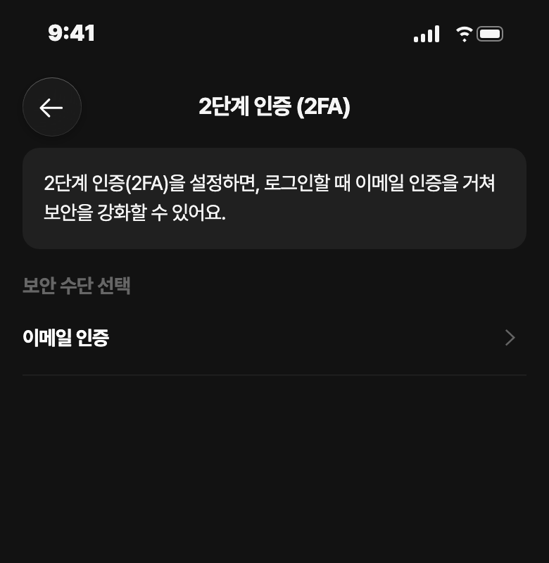

2단계 인증은 무엇인가요?
2단계 인증은 E-mail로 로그인할 때 비밀번호를 넣은 뒤 가입 이메일로 받은 인증번호를 한 번 더 넣어 본인을 확인하는 기능이에요. E-mail로 가입한 계정만 쓸 수 있고, 처음에는 꺼져 있어요.
- 설정 > 계정 > 2단계 인증 (2FA)으로 들어가요.
- 「이메일 인증」을 눌러요.
- 가입 이메일로 온 숫자 6자리 인증번호를 3분 안에 넣어요.
켜 두면 E-mail로 로그인할 때마다 인증번호를 물어요. 한 번 인증한 기기도 기억하지 않아요. Kakao·Google·Apple 로그인에는 쓰이지 않아요. 설정 > 계정 > 2단계 인증 (2FA) > 이메일 인증에서 스위치를 끄면 바로 꺼져요.

계정 > 2단계 인증 (2FA) 화면">※ 인증 수단은 가입 이메일 인증번호 하나예요. 문자나 OTP 앱으로는 받을 수 없어요.